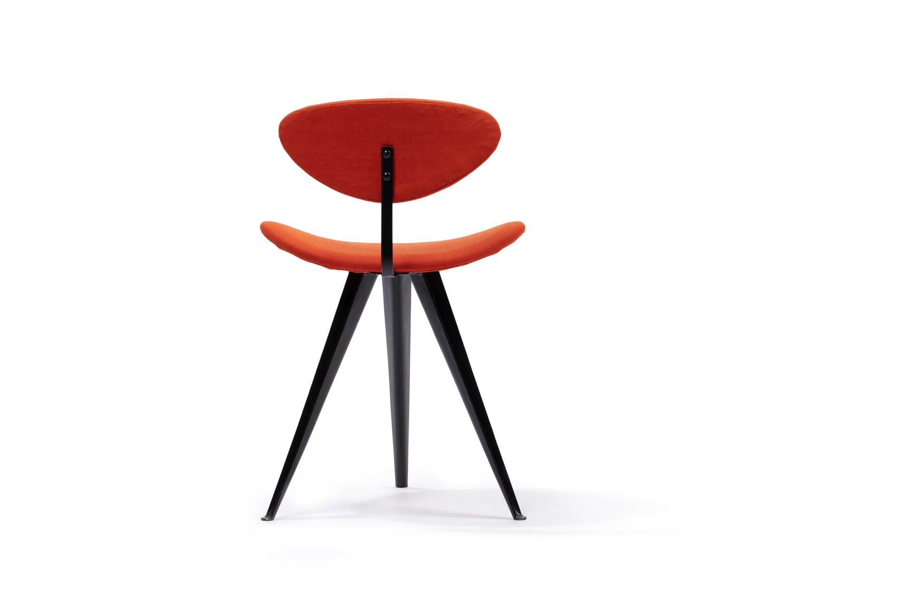
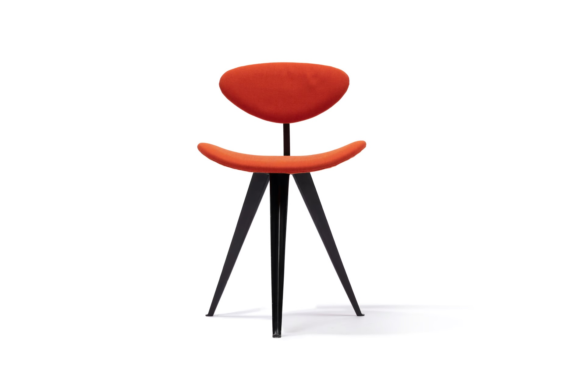

Furniture Design
Andrews was an active furniture designer, producing a range of modernist chairs, tables, and storage units. His furniture designs reflected his commitment to simplicity, function, and refined aesthetics. He often worked with locally sourced materials, incorporating timber and steel to create elegant yet practical pieces. Notably, his lounge chairs and modular storage units showcased his ability to merge craftsmanship with industrial production techniques, making high-quality design accessible to Australian households.
Gazelle Chair
Andrews was an active furniture designer, producing a range of modernist chairs, tables, and storage units. His furniture designs reflected his commitment to simplicity, function, and refined aesthetics. He often worked with locally sourced materials, incorporating timber and steel to create elegant yet practical pieces. Notably, his lounge chairs and modular storage units showcased his ability to merge craftsmanship with industrial production techniques, making high-quality design accessible to Australian households.
 https://collection.powerhouse.com.au/object/96268 Text by Joan Kerr, DAAO: https://www.daao.org.au/bio/gordon-arthur-andrews/biography/
Check out some more of his work